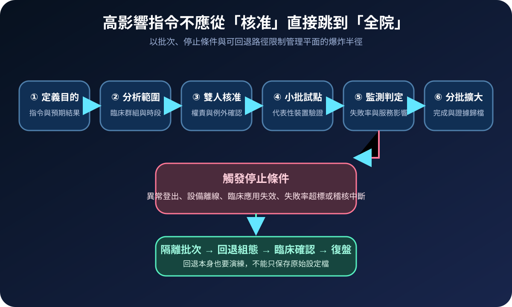
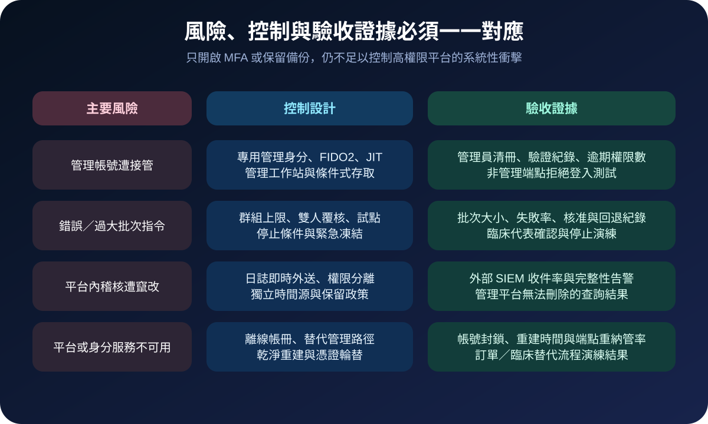

醫療資安國際觀察 · 2026-09-03
醫療端點管理平台如何避免一鍵擴大衝擊：從管理平面到復原演練
作者：Dr. William｜醫療資訊與資安治理實務工作者
端點管理平台能一次更新、鎖定或清除大量裝置；同一項效率也可能把遭接管帳號或錯誤指令迅速放大。醫療機構需要把它視為高衝擊管理平面，而不是一般維運工具。
名詞解釋：MDM、管理平面與爆炸半徑
行動裝置管理（MDM）集中管理裝置註冊、組態、應用程式、憑證與遠端處置；更廣義的端點管理也涵蓋工作站及其他受管裝置。管理平面是能改變大量系統狀態的控制層。爆炸半徑則描述單一帳號、政策或批次指令失效時，可同時影響多少裝置、據點與臨床服務。
國際現況與適用邊界
CISA 於 2026 年 3 月 18 日，以美國醫療科技公司遭攻擊事件為背景，警示組織強化端點管理系統組態。Stryker 的公開更新與 SEC 文件記載，2026 年 3 月 11 日事件造成全球企業網路及 Microsoft 環境中斷；調查範圍包含身分環境、伺服器與工作站。公司其後表示產品安全未受影響，但部分訂單、出貨及個人化植入物個案一度受干擾，並於 4 月 1 日宣布全球製造網路恢復全面運作。這些公開資訊說明企業管理環境與產品安全可能是不同邊界，但後台中斷仍可傳導至醫療供應及服務。
法域與效力：CISA 警示、SEC 揭露及 NIST 指引屬美國情境，不是台灣醫院的法定控制清單。台灣醫療機構可採用管理平面隔離、分批部署及復原驗證方法，實際要求仍須依本地法規、採購契約、醫院政策與臨床風險核定。
規劃：先辨識高影響指令與臨床範圍
NIST SP 800-124 Rev. 2 將集中式裝置管理與端點防護納入行動裝置生命週期治理。醫院規劃時可先建立平台、管理身分、連接器、受管群組、憑證及高影響指令清冊；再標出急診、加護、手術、藥事、影像與行政端點的可接受中斷時段。角色至少涵蓋資安、端點維運、身分管理、臨床工程、服務負責人及營運持續團隊。驗收指標可採管理員過期權限數、抗釣魚驗證涵蓋率、最大批次裝置數、變更失敗率、日誌外送完整率、回退時間與乾淨重納管成功率。

實作：把高權限、批次與證據拆開
- 隔離管理身分：管理帳號不處理郵件及一般上網，從受控工作站登入，採抗釣魚 MFA、即時授權與定期權限複核。
- 限制批次能力：將大量清除、鎖定、憑證撤銷及全域組態變更列為高影響動作，要求雙人覆核、時段限制與群組上限。
- 建立小批試點：先選具代表性的非關鍵端點，監測登入、網路、醫療應用及設備介面；符合停止條件即凍結後續部署。
- 外送稽核紀錄：把管理員登入、角色變更、政策修改、批次目標與執行結果送到權限分離的日誌平台。
- 演練失去管理平面：驗證帳號封鎖、憑證輪替、離線裝置清冊、替代管理路徑、乾淨重建與端點重納管。
風險：防護工具本身也可能成為單點失效
只替管理帳號開啟一般 MFA，仍可能忽略工作階段竊取、授權過寬或非受控裝置登入；只保留平台內日誌，也可能讓攻擊者同時影響證據。過度縮小權限若未保留緊急路徑，事件期間又可能拖延隔離。控制設計需要同時保留快速凍結、受控 break-glass、獨立記錄及事後複核，並以實際復原時間而非設定畫面作為驗收結果。

可執行清單
- 端點管理員是否使用專用身分、受控工作站與抗釣魚 MFA？
- 高影響指令是否有雙人覆核、最大批次及停止條件？
- 臨床關鍵端點是否與一般端點分群並設定不同部署時段？
- 管理事件是否即時送到平台管理者無法刪除的儲存位置？
- 是否演練過平台失效、帳號封鎖、乾淨重建及端點重納管？
- 供應中斷時，訂單、出貨、設備支援與臨床替代流程是否可運作？
來源
- CISA｜CISA Urges Endpoint Management System Hardening After Cyberattack Against U.S. Organization（發布：2026-03-18；查閱：2026-09-03）
- Stryker｜Customer Updates: Stryker Network Disruption（更新：2026-04-01；查閱：2026-09-03）
- U.S. SEC｜Stryker Corporation Form 8-K（發布：2026-03-23；查閱：2026-09-03）
- NIST｜SP 800-124 Rev. 2, Guidelines for Managing the Security of Mobile Devices in the Enterprise（發布：2023-05；查閱：2026-09-03）
內容說明
本文依健康台灣深耕計畫相關治理內容整理，並參考 CISA、NIST、SEC 與事件當事公司公開資料，提出台灣醫療機構可採用的端點管理平面風險控制與驗收框架；不取代主管機關公告、法律意見、產品安全通知或個案臨床決策。